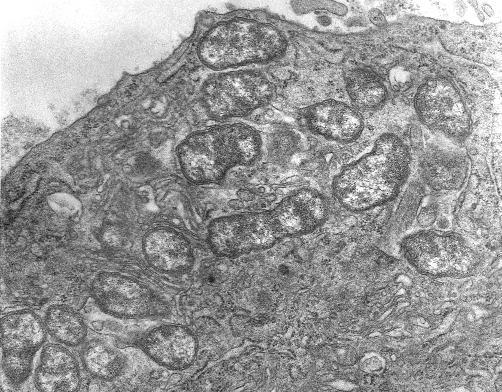

 Scrub typhus is the commonest occurring rickettsial infection in India. The infection is transmitted through the larval mites or “chiggers” belonging to the family Trombiculidae. Only the larval stages take blood meal. A number of small rodents particularly wild rats of subgenus Rattus are natural hosts for scrub typhus. The field rodent and vector mites act as reservoir and between the two the infection perpetuates in nature. The vector mite is known to be present in diverse ecological niches such as equatorial rain forests, semi deserts and Alpine subarctic terrains in the Himalayan regions. Endemic foci are usually associated with specific habitats such as abandoned plantations, gardens or rice fields, overgrown forest clearings, shrubby fringes of fields and forests, river banks and grassy fields. These ecological patches which attract the natural host of mite vectors are called “mite islands” Rickettsioses, of which scrub is the commonest, has been clearly reported from several states in India including Jammu and Kashmir, Himachal Pradesh, Uttaranchal (now known as Uttarakhand), Bihar, West Bengal, Meghalaya, Rajasthan, Maharashtra, Karnataka, Tamil Nadu and Kerala. In some regions scrub typhus accounts for upto 50% of undifferentiated fever presenting to hospital. Inbios Scrub Typhus IgM Elisa kit has been used in India by ICMR and other countries for the diagnosis of this disease. ELISA techniques, particularly immunoglobulin M (IgM) capture assays for serum, are probably the most of sensitive tests available for rickettsial diagnosis and the presence of IgM antibodies, indicate comparatively recent infection with ricketssial disease. In cases of infection with O. tsutsugamushi, a significant IgM antibody titre is observed at the end of 1st week, whereas IgG antibodies appear at the end of 2 nd week. The cut off value is Optical Density of 0.5. Baseline titres need to be established keeping in view the regional variations.
*DHR-ICMR, GUIDELINES FOR DIAGNOSIS AND MANAGEMENT OF RICKETTSIAL DISEASES IN INDIA
Scrub Typhus IgM Elisa Manual
Scrub Typhus IgG Elisa Manual
FOR OTHER PRODCUTS THAT WE PROVIDE, PLEASE VISIT OUR PRODCUTS PAGE